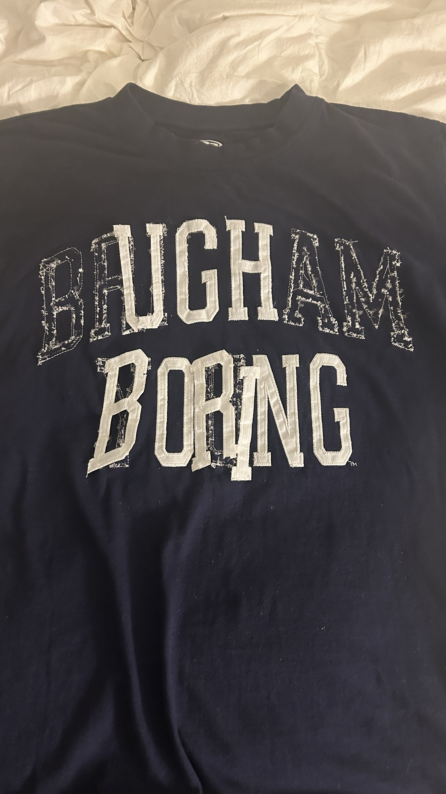
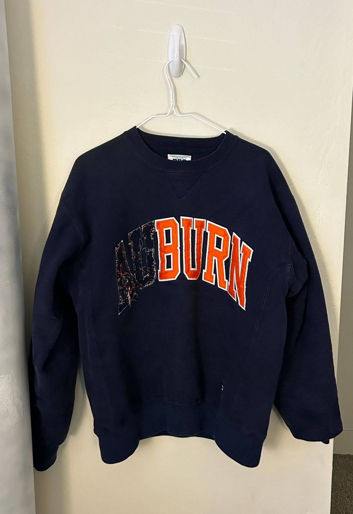
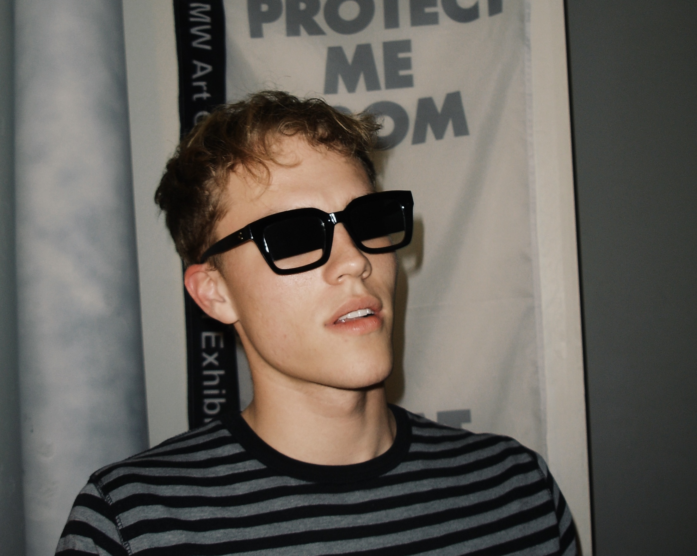
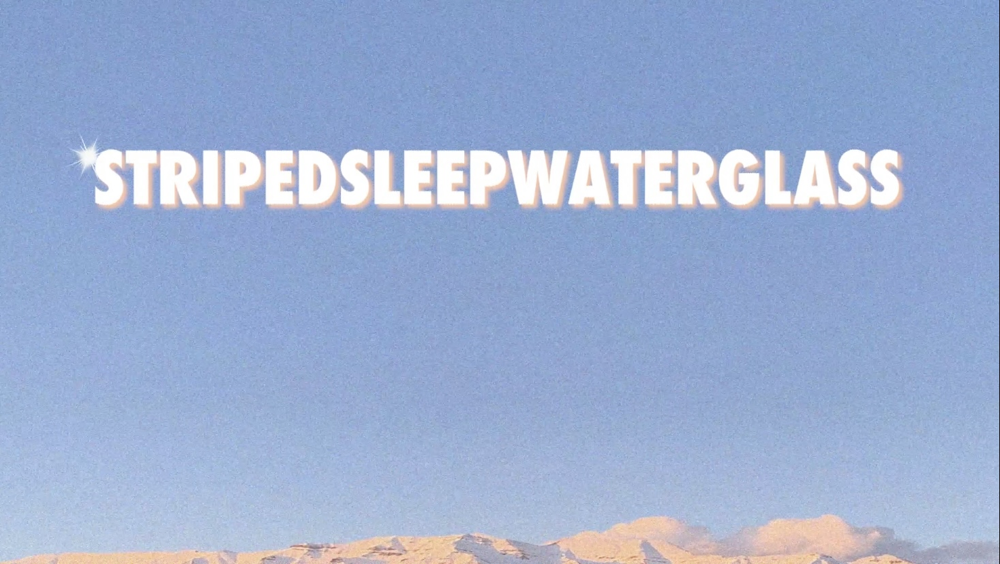

UGH BORING
When I saw this shirt hanging on a rack at Deseret Industries in Provo, Utah, I checked to see how the letters were stitched the shirt. When I saw the stitches, I immediately felt my seam ripper in my hands. I bought the shirt and took it home. I have been rearranging the letters of these collegiate sweaters and shirts for a couple years now. My first project was a Juilliard sweater that read "LIAR" once I was done ruining it. I gave it to my ex girlfriend.
I got this one home as soon as I could and immediately started tearing it apart. Being a student at Brigham Young, this was the perfect piece to show my disdain towards how the current fashion trends plague campus. BORING!
BURN
This is another long-time idea of mine. I have had this written down in my notes for probably four years now. a couple months ago was when I finally found an Auburn sweater with sewn-on letters for me to ruin. The sweater itself has become one of my favorite ones to wear. It's heavy so it weighs on you, and it sends an edgy message.
HALFTINTS
The inspiration for these glasses came from a picture of Mary-Kate Olsen wearing a pair of Chanel glasses that were only tinted partially. I knew I needed some. Until I saw that they were 2,000 dollars. So, I made my own.
STRIPEDSLEEPWATERGLASS
To no other project of mine do I associate as many memories as I do to STRIPEDSLEEPWATERGLASS. SSWG for short, this is a mix of words that I mashed together to combine two ideas:
- The light that comes into a dark room through the blinds that creates a striped effect on the wall, represented by STRIPEDSLEEP
- Clarity in both its liquid and solid form, represented by WATERGLASS
Those who know about SSWG know that it is very esoteric. If you know about it, it's probably because you're part of it.